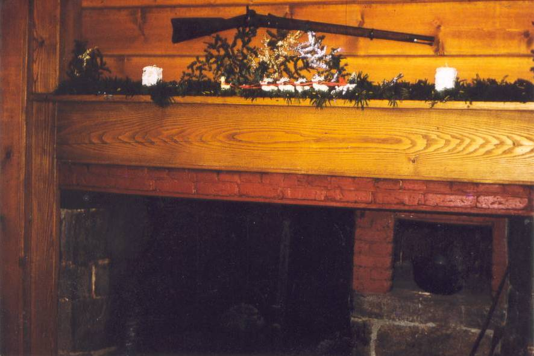

Photo
Album
Wheeler/Osborn
House
 Thanksgiving Day, 1953
Thanksgiving Day, 1953
No longer standing, this house
was the
inspiration for this project. It was built on Riggs Street,
in 1772, by Lt. Samuel
Wheeler. The 1868 map shows the owner as Joel Osborn. The 1850 census
gives those living with Joel as his wife, Catherine A. Osborn, age 27,
their son, Orlando C. Osborn, her mother, Sally M. Washburn, age 54,
and Samuel Wheeler age 81. This Samuel Wheeler was the father of Sally
M. Washburn, and grandson of Lt. Samuel Wheeler.

In
1953 the house was purchased by my parents, Bill and Harriet Bauer,
from a Mrs. Osborn, who told them the house had been in the family for
a number of generations. The Bauer's uncovered the original kitchen
fireplace that had been covered up. They found the hearth stone across
the street and put it back into place. The pots and hearth tools were
found in the attic.
